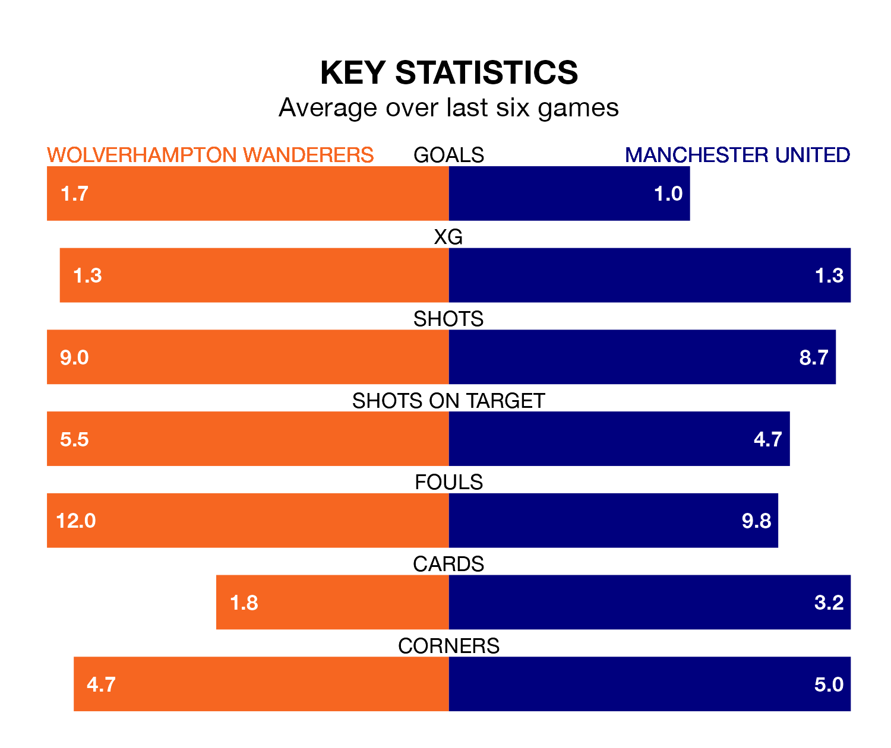

Wolverhampton Wanderers host Manchester United on Thursday at the Molineux Stadium in the Premier League.
In their last league match, on January 22, Wolves drew with Brighton and Hove Albion 0-0 away.
United also drew, 2-2 at home against Tottenham Hotspur on January 14, with Marcus Rashford and Rasmus Højlund on the scoresheet.
In the last 10 years, Wolves and United have played each other on 14 occasions. Wolves won three of them, United seven, and they drew four times.
On average, Wolves scored 0.6 goals and the Red Devils 0.9 in those matches.
Their last meeting was on August 14, when United won 1-0 at home.
In André Onana, United can rely on one of the league's safest pair of hands. He has kept six clean sheets in his 21 appearances this season, and only two other 'keepers – Everton's Jordan Pickford and Liverpool's Alisson Becker – have been able to prevent the opposition scoring on more occasions in the Premier League.
In Wolves's net, José Sá has three clean sheets in 19 games. He has conceded a goal every 68 minutes, only slightly more often than the 70 minutes between goals for Onana Onana.
The home side are in reasonable form in the Premier League, with three wins and two draws from their last six games.
With a win and two draws over that period, the Red Devils' form is much worse – they have taken five points from 18, compared to Wolves's 11.
With 24 goals in 21 games so far this season, the visitors are scoring at below the league average rate with 1.1 goals per game. But they are conceding fewer than average too, letting in 29 goals at a rate of 1.4 per game.
Wolves are also below average scorers, with 1.4 goals per game, compared to a league average of 1.6. They have conceded 1.5 goals per game.
United are ninth in the table after 21 games, of which they have won 10 and drawn two, earning 32 points.
The hosts are two places behind United in 11th, with eight wins and five draws putting them on 29 points.
Thursday's match will be refereed by Jarred Gillett, who has taken charge of nine Premier League games so far this season, issuing two red cards and booking 45 players. He has awarded three penalties.
The last Wolves game Gillett refereed was a 1-0 home win against Burnley on December 5. His last United match was their 3-1 loss at home against Brighton and Hove Albion on September 16.
Updated: 10:40 (UTC), 01/02/24